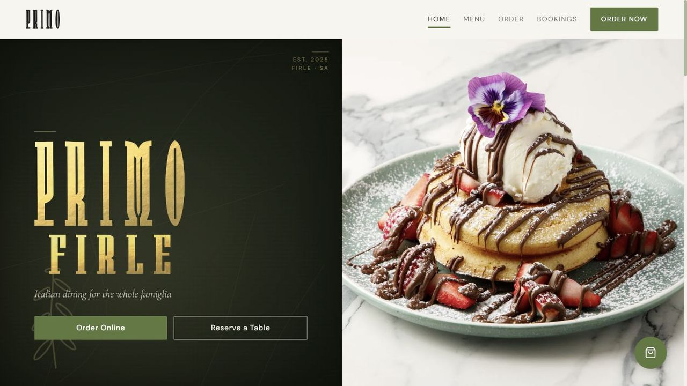
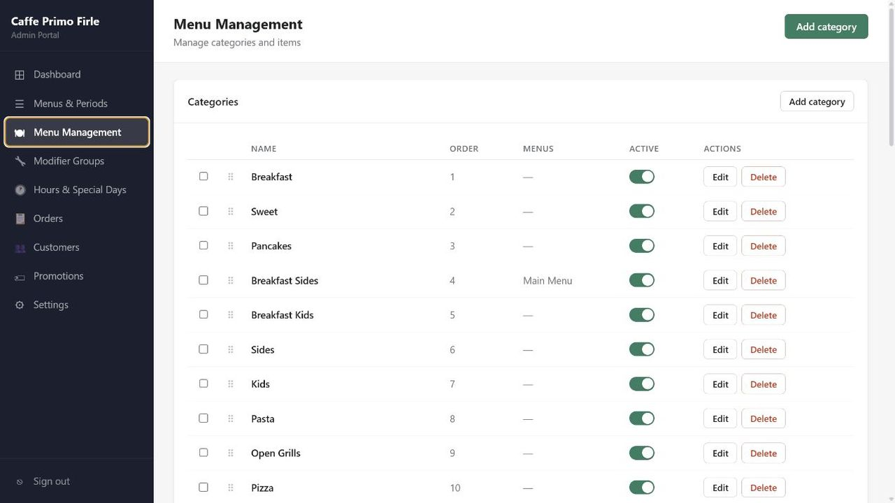

Sheet 01 of 06 / Full stack platform
Cafe Primo Firle platform
A restaurant that was running on four disconnected tools now runs on one system: online ordering, Stripe checkout, a live staff queue, owner administration, customer records and a receipt printer sitting on the counter. It has been in production since it launched.
- Context
- A working restaurant
- Architecture
- Five connected applications
- Backend
- Railway and PostgreSQL
- Status
- Deployed in production
The brief
Four groups of people, four different jobs, one source of truth.
Customers browse a live menu and order for pickup. Counter and kitchen staff receive paid orders and move them through a queue. The owner manages menu data, trading hours, modifiers, promotions and customer records. A local service bridges cloud orders to printer hardware that has no idea the cloud exists. Each of those wants a different interface, and all of them have to agree about the same order.
- Customer experience
- Menu, cart, checkout and pickup
- Operations
- Live order queue and status flow
- Administration
- Menus, customers, hours and promotions
- Hardware
- ESC/POS thermal printing
Interfaces
Three purpose built front ends, one restaurant.
These captures come from the real applications running locally against a development database. Customer and order identifying information was excluded from the images on purpose.


Architecture
Specialised interfaces around one operational record.
- Customer siteReact and Vite storefront, Zustand cart, Stripe or cash checkout.
- Backend APINode, Express, JWT roles, business rules and Socket.io events.
- PostgreSQLMenus, modifiers, orders, customers, promotions and settings.
- Staff and adminLive order handling, menu control, analytics and customer operations.
- Customer storefront. React app covering menu discovery, cart state, dietary information, checkout and store status rules.
- Admin portal. A separate React interface for menu items, modifier groups, trading hours, special days, orders, customer segments, discounts and campaigns.
- Staff dashboard. Tablet first React app on Socket.io for live orders, also packaged as an Android app with Capacitor.
- Printer bridge. A small Node service that turns order data into ESC/POS receipts for the thermal printer on the counter.
Engineering decisions
Design for payments, unreliable hardware boundaries and a busy Saturday.
- Confirm payment through webhooks. Stripe events move an order into the staff queue. The browser is never trusted to say the money arrived.
- Use real time events where latency matters. Socket.io pushes new orders, status changes and sold out updates across every interface at once.
- Keep uploads off ephemeral compute. Menu images stream to Cloudflare R2 instead of living on a Railway container that can be replaced.
- Migrate before every deploy. The production start command fails fast if the PostgreSQL schema cannot be updated safely, so a bad deploy stops before it serves traffic.
- Split cloud and local responsibilities. The hosted API owns orders. The printer service stays next to the hardware it drives.
Production footprint
The Express API and managed PostgreSQL database run on Railway, images sit in Cloudflare R2, and the three Vite front ends deploy as static applications. The system handles role based authentication, Australian GST, public holiday surcharges, discounts, customer records and receipt output.
Stack
Web, cloud, data and hardware in one delivery.
- Frontend
- React, Vite, Zustand, Capacitor
- Backend
- Node.js, Express, Socket.io
- Data and payments
- PostgreSQL, Stripe
- Infrastructure
- Railway, Cloudflare R2
No credentials or internal administration links appear in this public case study.